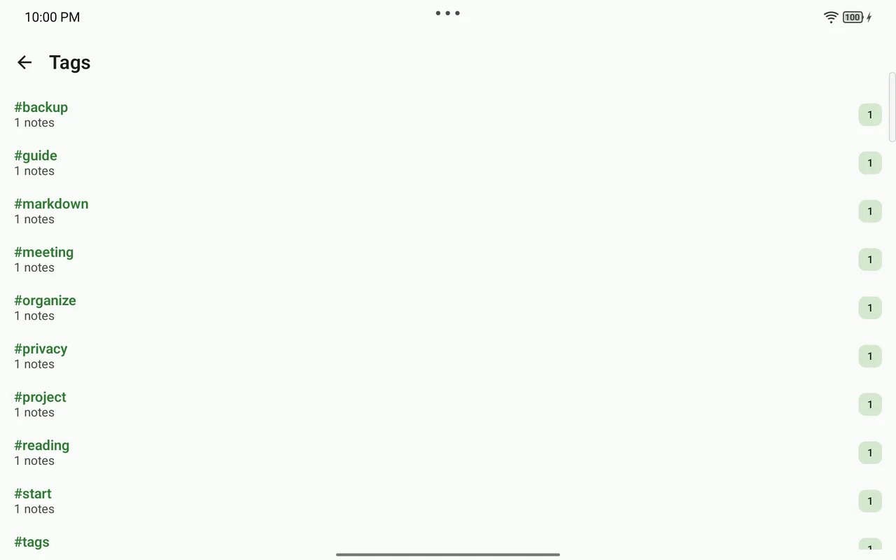
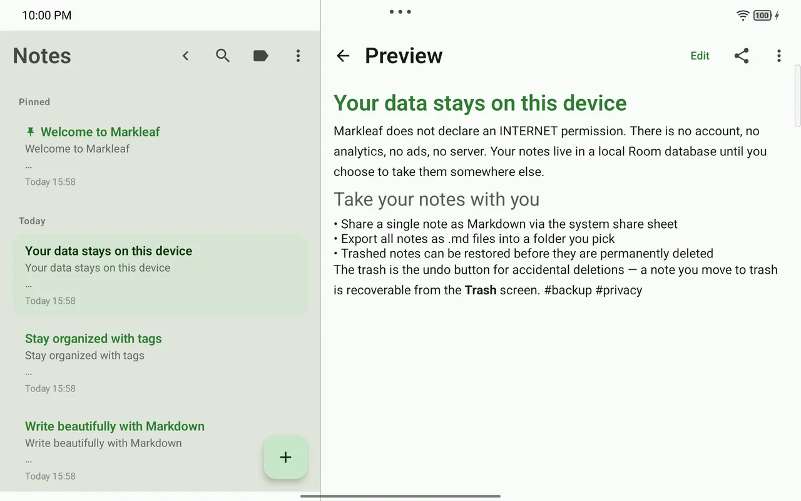

当前版本
v2.33.0 发布于 2026-08-2301 · 书写
语法活了起来，工具只在需要时出现。
Markdown 原文保持不变，标题和强调在编辑过程中依然清晰易读。一个小小的 Aa 按钮、随选区出现的操作，以及行首的 / 命令，让你在不弄乱屏幕的前提下添加格式。
- 实时 Markdown 与 CommonMark/GFM 预览
- 13 种格式化操作与实体键盘快捷键
- 表格、提示块与 Wiki 链接的快速插入
当前版本
v2.33.0 发布于 2026-08-23网络权限
0 没有账户、分析、广告或跟踪文件归属
.md 导出与文件夹镜像真实的写作流程
打开、书写、整理、查找、导出 — 全部在一台设备上自然衔接。
01 · 书写
Markdown 原文保持不变，标题和强调在编辑过程中依然清晰易读。一个小小的 Aa 按钮、随选区出现的操作，以及行首的 / 命令，让你在不弄乱屏幕的前提下添加格式。
02 · 整理与查找
正文里的 #标签 就是你的分类方式，SQLite FTS 搜索与快速切换让你在大量笔记之间也能迅速跳到下一个想法。

03 · 拥有与迁移
把所有笔记导出为标准 Markdown，或镜像到你自己选择的 SAF 文件夹。即使需要分享 PDF，原始的 .md 也原样保留。
notes/
├─ 项目计划.md
├─ 阅读记录.md
└─ 会议记录.md
# 项目计划
- [x] 拟定大纲
- [ ] 下一步
#project #writing04 · 沿用你自己的文件夹
Markleaf 没有自己的知识库格式。Obsidian、Logseq 或文本编辑器已经写好的文件会被直接当作笔记接管，而它们自带的 frontmatter 会原封不动地写回去。
.md 文件，而不是复制一份your-folder/
├─ 阅读记录.md
└─ 项目计划.md
---
tags: [reading]
aliases: [log]
markleaf_id: 7f3c…
---
# 阅读记录Privacy by architecture
Markleaf 本身不声明任何联网权限。笔记、标签、附件与设置都留在应用私有存储中，直到你自己决定把它们移出去。
android.permission.INTERNET = false
阅读完整隐私政策
Room 数据库与应用私有的附件存储
导出 · 分享 · SAF 文件夹
没有 Markleaf 服务器或后端

安装
Markleaf 是一款免费的开源应用。请从 F-Droid 或 GitHub Releases 获取最新版本。
推荐 · 最新版本
先在开源仓库中确认构建与更新路径，然后再安装。
在 F-Droid 上查看 Markleafcom.markleaf.notes